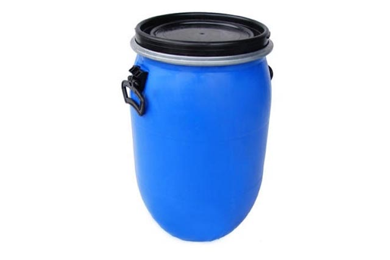
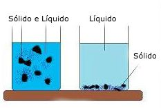
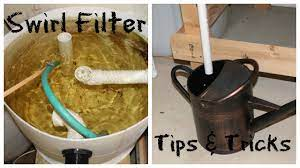

Um dos elementos mais importantes do sistema de aquaponia é o filtro.
Filtros são necessários pois a quantidade de dejetos eliminados pelos peixes precisam ser retirados. Além disso, dejetos em excesso podem entupir a bomba d’água, se esta estiver colocada diretamente no tanque de peixes.
Outros elementos também podem sujar a água, como plantas em decomposição, penas de pássaros, etc. É importante evitar esse acúmulo para manter o sistema equilibrado.
Existem vários tipos de filtro. Iremos citar como exemplo um sistema com dois filtros bastante simples, e bem eficientes.
No primeiro filtro, utilizamos uma “bombona”, facilmente encontrada em lojas de produtos químicos ou materiais plásticos.

Bombona: Material resistente e acessível para construção de filtros.Bombonas são muito práticas por diversos motivos:
- São feitas de material resistente;
- Preço baixo, ainda mais se forem recicladas;
- Formato circular, importante para movimentos circulares da água;
- Tampas que se fecham com a ajuda de travas de metal.
A primeira bombona fará uma primeira filtragem por decantação.
A decantação é um fenômeno simples, através do qual elementos sólidos, mais densos que a água, acabam afundando. Dessa forma, podem ser retirados com facilidade.

Decantação: O processo físico de separação de sólidos.Componentes Essenciais para sua Filtragem
Esse filtro também é conhecido por filtro de sólidos, filtro ciclone, ou do inglês, swirl filter.
Existem várias formas de se fazer um filtro ciclone. Faremos aqui um filtro ciclone simples:
Inicialmente, a água vem do tanque de peixes por uma flange localizada na parte superior. Ao entrar no filtro, ela desce por um cano interno até o fundo, onde, com o auxílio de um joelho, irá circular no sentido anti-horário.
 Filtro Ciclone: O movimento da água auxilia na separação dos resíduos.
Filtro Ciclone: O movimento da água auxilia na separação dos resíduos.
A circulação da água formará um redemoinho, o que facilitará a decantação. Daí o nome, filtro ciclone.

Visualização do redemoinho (Swirl Filter) para coleta de sólidos.Na parte superior, teremos uma outra flange, na mesma altura ou pouco abaixo da primeira. Esta flange também deverá estar abaixo do nível do tanque, para que a água continue escoando para o próximo filtro, respeitando o desnível necessário.
Saindo da parte interna da flange, centralizaremos um outro joelho, de forma a captar a água que estará subindo, continuamente, mas sem os resíduos sólidos mais pesados.
Essa água, mais limpa, irá para uma outra bombona, onde faremos uma nova filtragem.
Perceba que, na primeira bombona, temos uma filtragem mecânica, pois não temos química ou interferências biológicas. É uma separação simples de sólidos e líquidos, operada apenas pela gravidade e pelo movimento inercial.
Saiba mais sobre a importância desse fluxo no post sobre desnível, onde entendemos como a gravidade é fundamental para o funcionamento do sistema.